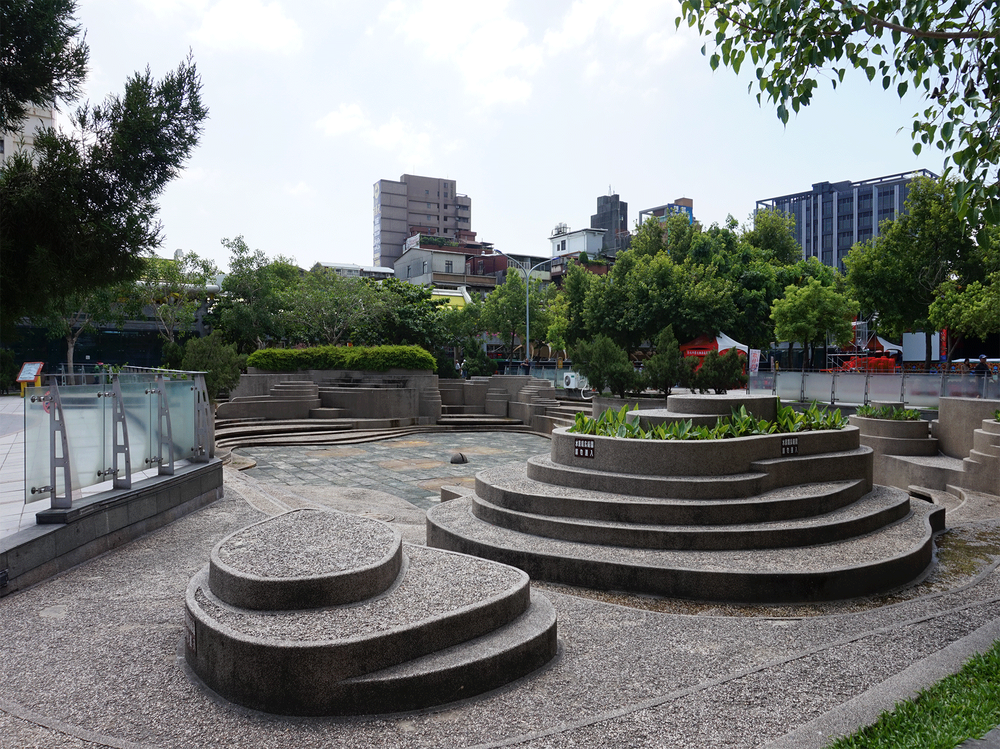

|
|

國父紀念館 「國父紀念館」為紀念國父孫中山先生而籌建，鄰近台北101、信義商圈。 座落在十萬公尺見方的平地中央，外觀宏偉、簡潔、明爽、有力，不但使人產生景仰，也令人感到力與美的結合。 Read more
艋舺龍山寺 艋舺龍山寺是萬華的信仰中心，與國立故宮博物院、中正紀念堂並列為國際觀光客來臺旅遊的三大名勝。 以善盡弘揚佛法、提倡社教的文化價值，且每年定期舉辦節慶祭典及傳統民俗活動。 Read more |
|

華山文創園區
華山文創園區是一個以藝文為主的專業場地。

艋舺公園 艋舺公園位於龍山寺對面，是政府以藝術為主題開發，頗具特色的民俗公園。 而夜晚時，公園內的美人照鏡池，會上演一場場水舞秀，搭配著池底五顏六色的燈光，展現各種不同變化的音樂噴泉！ Read more |
|

西門町 西門町位於萬華區，是台北著名的流行商圈。 西門紅樓、電影街、KTV、誠品書店和各式的精品小店都可以在這看到。 當地悠久的歷史和人文發展更讓美食小吃享譽國際，成為台北旅遊朝聖所在。 Read more
林家花園 林家花園位於板橋，分為園(林家花園)和邸(林家住所)兩部分，目前園區列入園林類二級古蹟。 其江南庭園的風格是台灣古式庭園的代表，亦是民眾來到台北旅遊不可不去的旅遊景點之一。 Read more |